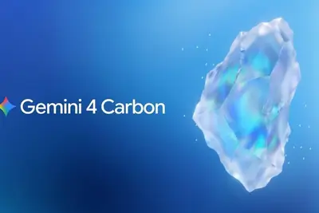
其他
其他全部主題
Google發表Gemini 4 Carbon，登上智慧指數第一與三項資安測試領先，先開放給部分資安防禦者使用。
The French AI lab claims its latest release matches or outperforms even the best models from DeepSeek and Z.ai in coding and cybersecurity.
IT之家 10 月 30 日消息，太平洋时间 10 月 29 日星期四下午 2 点（北京时间 10 月 30 日凌晨 5 点）举办的 2026 财年第三财季（2026 年 6 月 28 日至 2026 年 9 月 26 日）财报电话会议上，公司首席执行官陈立武表示，数据中心与人工智能 DCAI 业务成为本季度最大亮点， 实现该板块 15 年来最强营收增长，拉动整体业绩超预期。 英特尔本季营收 165 亿美元 （IT之家注：现汇率约合 1,102.29 亿元人民币） 、同比增长 21%；DCAI 营收 73 亿美元 （现汇率约合 487.68 亿元人民币）
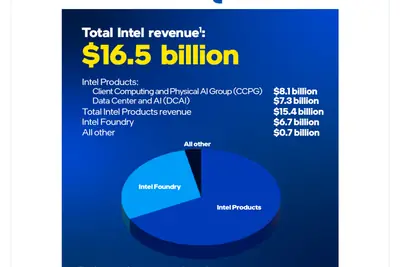
Sources tell WIRED that an Accenture employee’s personal Claude agent ran on a DOD network for two months before it was identified and the vulnerability could be patched.
https://www.nytimes.com/2026/10/29/us/politics/nvidia-china-... , https://archive.ph/K7bih Comments URL: https://news.ycombinator.com/item?id=50293047 Points: 263 # Comments: 178
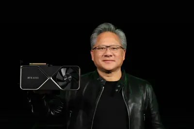
使用者可以要求模型「轉錄這段錄音並標示每位說話者」、「將這段音訊翻譯成英文」，或直接詢問「這場會議做出了哪些決策？」。多項要求也能組合在同一個提示詞中。
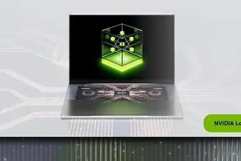
當你向 ChatGPT 傾訴心事、尋找生活建議，甚至探討心理困境，如果演算法回應非但沒有化解危機，反而強化幻覺 […]
AI晶片持續提高記憶體性能要求，可能加速第六代高頻寬記憶體（HBM4）轉向HBM4E的步調，據南韓供應鏈分析，主要AI半導體客戶已有加速推進HBM4E的動向，HBM4量產...
AI機器人應用的發展，讓晶片的運算需求不斷提高。DIGITIMES Research觀察，在2026年AI機器人運算IC市場中，NVIDIA以69%市佔領先；英特爾、高通與超微分別僅佔11%...
甲骨文（Oracle）最新宣布，自2027年起將在旗下雲端資料中心提供採用Cerebras Systems AI運算系統的雲端服務。儘管雙方並未披露甲骨文將採購多少Cerebras硬體，但這...
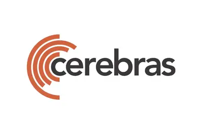
圍繞AI新雲端業者的前景，市場正浮現觀點碰撞：Tesla執行長Elon Musk警告，200多家新雲端業者（Neocloud）可能面臨大規模倒閉或合併；NVIDIA執行長黃仁勳則在GT...
人工智慧（AI）應用與雲端服務蓬勃發展，帶動高效能運算晶片與AI伺服器需求強勁。台灣作為全球AI硬體重要製造基地，廠商加碼投資擴充產能已屬必然。由於台灣借貸成本低...
Anthropic手握的流動資產價值1,317億美元，超越多數美國企業，但公司未來還有龐大的基礎設施支出，該筆資金能否撐起長期發展，也成為上市前的焦點。
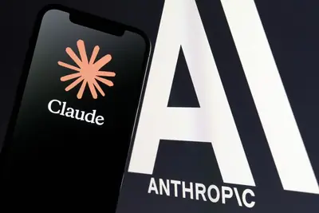
AI晶片封裝尺寸持續放大，面板級封裝設備也逐步走向客戶驗證與量產出貨。中國半導體設備業者盛美半半導體設備（上海）股份有限公司（以下簡稱盛美上海）29日宣布，首台...
“IT早报”时间，大家好，现在是 2026 年 10 月 30 日星期五，今天的重要科技资讯有： 1. 华为制药军团总裁樊杰明确“华为不做药”，希望成为 AI 制药产业技术底座 对于外界关心的华为是否会直接进入药物研发，华为制药军团总裁樊确表示：“华为不做药，也不做管线。”华为希望发挥自身在计算、通信和人工智能领域的优势，为药企、科研机构及 AI 制药企业提供算力、存储、网络、工具链和数据治理能力，成为 AI 制药产业的技术底座与生态支持者。>> 查看详情 2. 国产武侠游戏《影之刃零》首发表现亮眼：登顶 Steam 全球畅销榜、峰值在线玩家数超 43
Amazon wants to be the king of AI cloud computing and become the first $1 trillion revenue business. But to do that it will have to continue on its capex spending spree, its CEO said Thursday.
IT之家 10 月 30 日消息，10 月 29 日，智元正式推出预训练 / 后训练 / 部署后 实现全链路规模化学习的具身模型 —— GO-3 Preview。 该模型采用具身原生的 WRAM（World Reasoning Action Model）架构，将任务推理、未来预测与动作生成连接起来，让机器人理解指令、预测未来，并生成可执行的动作。 该模型已于近日登顶 RoboDojo、RoboTwin、RoboColiseum 三大行业权威评测榜单， 将于 2026 年底全面开源 。 IT之家附官方介绍如下： 基于 WRAM 架构，GO-3 Previe
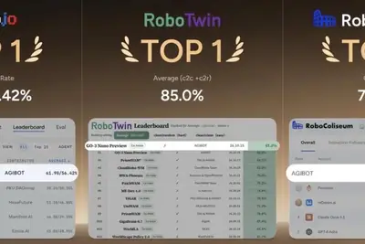
歐洲核子研究組織（CERN）與法國人工智慧公司 Mistral 宣布展開合作，計劃共同開發一款專為科學研究設計 […]
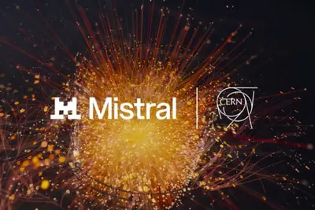
根據 CNBC 的報導，一篇由紐約時報引述知情人士的文章指出，與 GPU 大廠輝達（Nvidia）執行長黃仁勳 […]
API credits benefit for eligible ChatGPT subscriptions Earlier this month Anthropic announced a generous new benefit for their Max and Team subscriptions: $100, $200, and $500 per month subscribers would get the equivalent quantity of (expiring) credits to use with the Anthropic
As AI transforms how people find information online, Reddit is rethinking its open-web roots to protect its audience and business.
Rivian doesn't disclose if the value of its $5.8 billion joint venture will expand as a result.
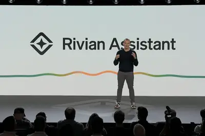
OpenAI-backed Thrive Holdings is buying ADT in a $15.3 billion deal, with plans to bring AI to the home security business.
The app connects to Instagram to build a virtual closet from photos you’ve already shared, or lets you add items manually by snapping a photo, recording a quick video, or uploading images from your camera roll.
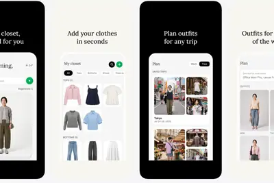
President orders trade talks on foreign-made factory robots, threatens tariffs.
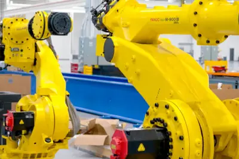
Now you can generate, preview, and edit PDFs, Google Docs, Google Sheets, slide decks, Markdown files, TXT files, and code directly within Google Gemini. The new file editing capabilities are available starting today for all Gemini users, and while PDF previews/editing works on b
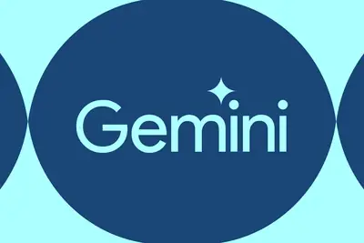
Uno reverse! After Wispr added meeting notes to its dictation app, Granola is adding dictation to its meeting notetaker. The voice AI wars are getting interesting.
Your JBL, Sony, or Bose Bluetooth headphones got a top-to-bottom wireless makeover — not just Auracast.
How I Built the Most AI-Pilled Company in the World Don't be put off by the clickbait headline, this piece by Jacob Sansbury describing how they are building Spawn is a fascinating exploration of the bleeding edge of what's possible with agentic engineering against frontier model
OpenAI’s updated Model Spec outlines five core values to guide more capable AI toward sound judgment, human agency, and faithfulness to human intent.
The latest version of Firefox fixes 167 security vulnerabilities, most of which are of high severity, while the newest version of Chrome patches 52 flaws, four of which are critical.
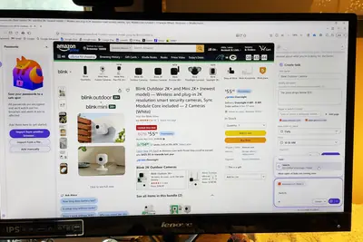
Google's negative cash flow balloons to -$9.06 billion, and stock price tumbles following Q3 earnings.
Dream is grounded in real physics and construction standards. Just as LLMs learn from text, Dream's world model is trained on more than 100 million square feet of building data gathered from permit archives across the United States.
Turning a simulation idea into a working application means assembling assets, connecting physics and rendering, and checking that the scene behaves as intended. Developers are combining frontier AI models with NVIDIA Omniverse libraries to help carry out that work — building appl
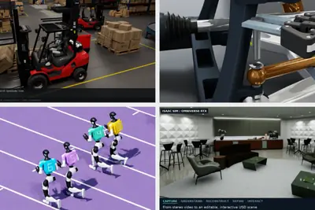
To anyone listening closely to what Microsoft CEO Satya Nadella has been saying over the past couple of years, this week felt like the clearest sign yet that AI is about to fundamentally change the size of Microsoft's workforce. Microsoft is now offering voluntary buyouts to arou
The bank’s message follows a trend among financial institutions that are restricting third-party AI agent access.
A new startup called &Truth is joining the race to automate formal verification, a painstaking process that uses math to prove software works as intended.
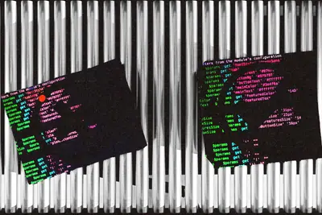
Article URL: https://mistral.ai/news/mistral-large-4-oss/ Comments URL: https://news.ycombinator.com/item?id=50289418 Points: 1140 # Comments: 324
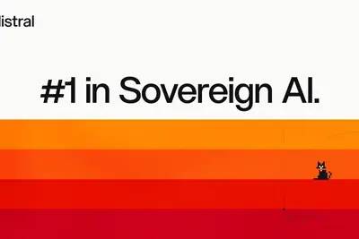
IT之家 10 月 29 日消息，映泰 (BIOSTAR) 今日推出了无风扇边缘 AI 系统 EdgeComp MS-U320。其基于英特尔酷睿 5 处理器 320"Wildcat Lake"，可提供合计 40TOPS 的本地 AI 算力。 MS-U320 三维 310×202×72 (mm)，净质量 1.2kg。其内部拥有 1 个 DDR5 SO-DIMM 内存模组插槽， 3 个 M.2 插槽分别支持固态硬盘 (PCIe Gen4 ×2)、无线网卡、蜂窝模组 。 这款设备一侧提供 2 个 USB-A 5Gbps、2 个 USB-A 480Mbps、2
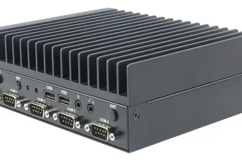
Today on Decoder, I’m joined by Joey Brookhart, an analyst at the chip and AI research firm SemiAnalysis, to help me dig into the story inside the numbers of the Anthropic IPO filing — a document known as an S-1. Anthropic just filed its S-1 to go public on the Nasdaq, and it cou